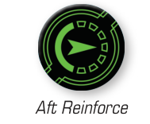
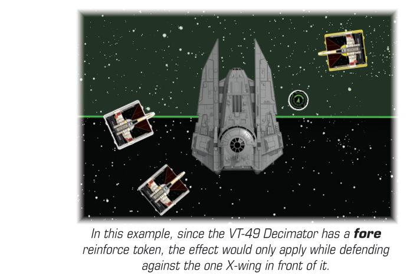

REINFORCE ()
Fore Reinforce
Pilots can reinforce to angle their deflector shields and increase the defensiveness of a portion of their ship. When a ship performs the action, it gains a reinforce token with either the fore or aft side faceup.

Aft Reinforce
A ship is reinforced while it has a reinforce token assigned to it. Reinforce tokens are circular, green tokens. While a reinforced ship defends, if the attacker is inside the full arc specified by the reinforce token and not in the other full arc, the token provides an effect.
The attacker needs to be in the defender’s arc for the fore reinforce token or be in the defender’s arc for the aft reinforce token.

In this example, since the VT-49 Decimator has a fore reinforce token, the effect would only apply while defending against the one X-wing in front of it.
During the Neutralize Results step, if the attack would hit and there is more than one / result remaining, one result is added to cancel one result.
-
A ship can have more than one reinforce token. If a ship has multiple of the same type of reinforce token, their effects are applied one at a time. Thus, for two reinforce tokens to both apply their effect, there would need to be at least three / results remaining.
-
When a ship gains a reinforce token, unless specified otherwise, the player that controls that ship chooses whether it gains a fore reinforce token or an aft reinforce token.
-
A ship does not spend the reinforce token when resolving its effect.
-
If an ability instructs a ship to gain one reinforce token, this is different than performing a action. A ship that gains the token without performing the action can still perform the action this round.
-
Reinforce can be used against attacks at range 4–5 even the defender's or normally only extends to range 3. If the attacker is at range 4–5, treat the defender's or arc as extending to range 5 for the purposes of determining which arc the defender is in for reinforce (but not for any other effects or abilities).